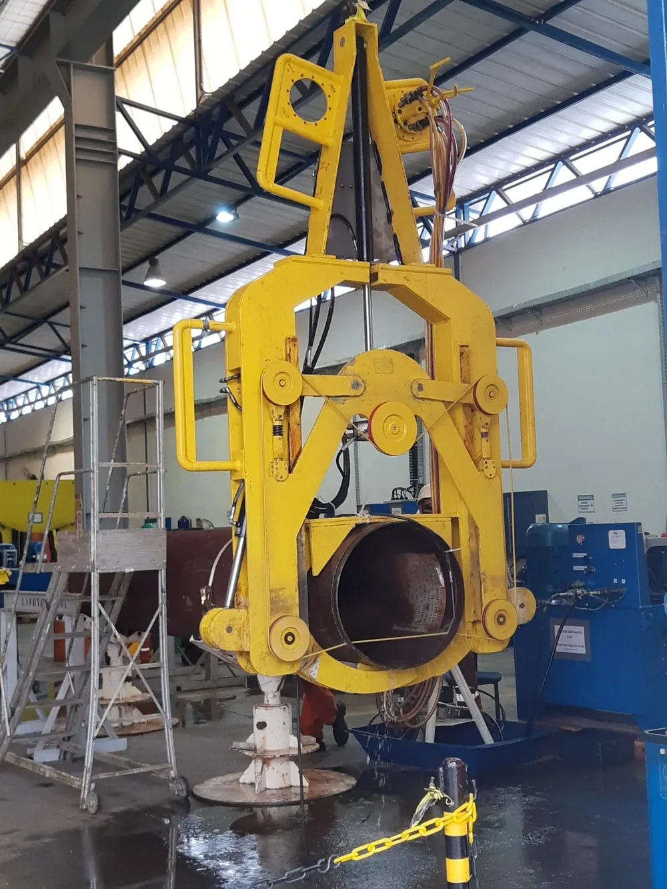

PT / EN◐Contato
Oceânica · Engenharia submarina desde 1978
Embarcações, ROVs, mergulhadores e engenharia trabalhando juntos, da superfície a três mil metros.
Profundidade em escala comprimida · desenho esquemático
Role para entrar no sistema

03 · Intervenção em águas profundas
Um veículo Work Class deixa a embarcação dentro do seu sistema de gerenciamento do umbilical e trabalha no equipamento submarino, com o piloto no convés.
ROV Work Class em equipamento submarino · quadro de vídeo publicado pela Oceânica
Modo · Contingenciamento
Coordenação de reparo de dutos, ferramentas de contingência projetadas pela própria Oceânica e embarcações com ROV Work Class.

Ferramenta de contingência · Oceânica↓ O universo Oceânica
Oceânica · desde 1978
Toque nos pontos · desenho esquemático